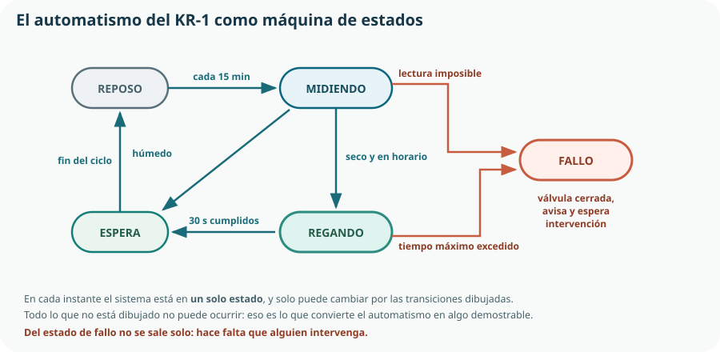

Este es el tema donde el KR-1 se convierte de verdad en un sistema automático. El Tema 17 dio el vocabulario y la ley de control; aquí se escribe el programa completo, con una estructura —la máquina de estados— que permite algo que un montón de if no permite: demostrar que el sistema no puede hacer lo que no debe. Y se le añade lo que el currículo llama supervisión y telemetría: la capacidad de vigilarlo y registrarlo desde lejos.
- pasar de un requisito de proceso a la especificación de un automatismo;
- clasificar las señales de un sistema en entradas y salidas, digitales y analógicas;
- explicar qué es una máquina de estados y por qué estructura mejor que una cadena de condicionales;
- escribir un automatismo con estados, transiciones y temporizaciones en MicroPython;
- identificar los enclavamientos de seguridad de un proceso y programarlos;
- explicar qué es un SCADA, sus cuatro componentes y sus ventajas;
- distinguir telemetría de monitorización y diseñar la cadencia de envío de datos;
- definir alarmas útiles y un registro que permita reconstruir lo ocurrido;
- verificar un sistema automatizado y documentarlo para que otro equipo lo mantenga.
1. Del requisito al automatismo
Automatizar un proceso es conseguir que se ejecute sin intervención humana. El criterio 5.1 pide diseñar, programar, construir y simular o montar ese proceso, y el trabajo empieza por escribir con precisión lo que tiene que ocurrir.
| Tipo | Requisito |
|---|---|
| Funcional | Medir la humedad del sustrato cada 15 min y regar 30 s si está por debajo del umbral. |
| Funcional | Regar solo entre las 7:00 y las 10:00, para reducir la evaporación. |
| Funcional | Publicar el estado cada 15 min y ante cada suceso relevante. |
| De seguridad | Nunca mantener la válvula abierta más de 60 s seguidos, por ninguna causa. |
| De seguridad | No más de 4 riegos al día. |
| De seguridad | Si una lectura es imposible, no regar y pasar a fallo. |
| De seguridad | Si tras regar la humedad no sube en dos ciclos, pasar a fallo: fuga o depósito vacío. |
| De disponibilidad | Funcionar sin red: se riega igual y se registra en local. |
| De disponibilidad | Tras un corte de alimentación, arrancar con la válvula cerrada. |
2. Entradas y salidas, digitales y analógicas
Un automatismo se comunica con el proceso por sus señales. Clasificarlas es el primer paso del diseño, y se hace en una tabla que después sirve de índice del cableado y del programa.
| Señal | Tipo | Pin | Margen | Elemento |
|---|---|---|---|---|
| Humedad del sustrato | Entrada analógica | GPIO 34 | 0–4095 cuentas | Sonda capacitiva |
| Nivel del depósito | Entrada digital | GPIO 18 | 0 = vacío | Interruptor de flotador |
| Pulsador de riego manual | Entrada digital | GPIO 19 | 0 = pulsado | Pulsador con pull-up |
| Electroválvula | Salida digital | GPIO 26 | 1 = abierta | MOSFET del Tema 11 |
| Indicador de estado | Salida digital | GPIO 23 | 1 = encendido | LED con su resistencia |
3. Máquinas de estados
Un automatismo no es una función matemática: su respuesta no depende solo de lo que mide ahora, sino de lo que estaba haciendo. Ya lo vimos en la histéresis del Tema 17, cuya decisión dependía de si la válvula estaba abierta. Esa memoria, organizada, es una máquina de estados.

| Concepto | Qué es | En el KR-1 |
|---|---|---|
| Estado | Situación en la que el sistema puede encontrarse. Solo puede estar en uno a la vez. | REPOSO, MIDIENDO, REGANDO, ESPERA, FALLO. |
| Transición | Cambio de un estado a otro. | De MIDIENDO a REGANDO. |
| Condición de transición | Lo que tiene que cumplirse para que el cambio ocurra. | Sustrato seco y hora entre 7 y 10. |
| Acción | Lo que se hace al entrar en un estado o mientras se está en él. | Al entrar en REGANDO: abrir la válvula y anotar la hora. |
ifCon condicionales sueltos, el comportamiento del sistema está repartido por todo el programa y nadie puede afirmar qué combinaciones son posibles. Con una máquina de estados, los estados están enumerados y las transiciones dibujadas, de modo que se pueden responder por escrito tres preguntas que un tribunal —o una inspección industrial— hará: ¿en qué estados puede estar el sistema? ¿Cómo se llega a cada uno? ¿Se puede llegar a un estado peligroso? Eso es demostrable; «lo he probado y funciona», no.4. El automatismo del KR-1, escrito
La máquina de estados se implementa con una variable que guarda el estado y una estructura que, en cada vuelta del bucle principal, decide si hay transición. Es el patrón estándar y cabe en una página.
"""Automatismo del KR-1. Máquina de estados de cinco estados.
Requisitos de seguridad implementados: tiempo máximo de válvula,
número máximo de riegos diarios, lectura plausible y fallo persistente.
"""
from machine import Pin, ADC
import time
# --- Tabla de entradas y salidas (Tema 18, sección 2) ---
sonda = ADC(Pin(34)); sonda.atten(ADC.ATTN_11DB)
deposito = Pin(18, Pin.IN, Pin.PULL_UP)
valvula = Pin(26, Pin.OUT)
led = Pin(23, Pin.OUT)
# --- Constantes de configuración ---
UMBRAL_PCT = 30
DURACION_RIEGO_S = 30
TIEMPO_MAX_VALVULA_S = 60 # requisito de seguridad
RIEGOS_MAX_DIA = 4 # requisito de seguridad
PERIODO_CICLO_S = 900
HORA_INICIO, HORA_FIN = 7, 10
CUENTAS_MIN, CUENTAS_MAX = 200, 4000 # fuera de esto, lectura imposible
# --- Estado ---
estado = "REPOSO"
t_estado = time.time() # instante de entrada en el estado
riegos_hoy = 0
def cerrar_valvula():
valvula.value(0)
def entrar(nuevo):
"""Cambia de estado, cierra la válvula por defecto y anota el instante."""
global estado, t_estado
cerrar_valvula()
estado = nuevo
t_estado = time.time()
registrar_evento(nuevo)
def en_estado_s():
return time.time() - t_estadoentrar() es la clave de todoCierra la válvula en cada cambio de estado, sea cual sea. Eso significa que la válvula solo puede estar abierta si algo la abre activamente dentro del estado REGANDO: cualquier transición, prevista o no, la cierra. Es una decisión de diseño que convierte un requisito de seguridad en una propiedad estructural del programa, en lugar de en una comprobación que alguien podría olvidar. Lo seguro tiene que ser lo que ocurre por omisión.# --- Bucle principal: una vuelta, una decisión ---
entrar("REPOSO")
while True:
lectura = leer_cuentas()
plausible = CUENTAS_MIN <= lectura <= CUENTAS_MAX
humedad = cuentas_a_porcentaje(lectura) if plausible else None
hora = hora_actual()
if estado == "REPOSO":
led.value(0)
if en_estado_s() >= PERIODO_CICLO_S:
entrar("MIDIENDO")
elif estado == "MIDIENDO":
if not plausible:
entrar("FALLO")
elif deposito.value() == 0:
entrar("FALLO")
elif (humedad < UMBRAL_PCT
and HORA_INICIO <= hora < HORA_FIN
and riegos_hoy < RIEGOS_MAX_DIA):
entrar("REGANDO")
valvula.value(1)
riegos_hoy += 1
else:
entrar("ESPERA")
elif estado == "REGANDO":
led.value(1)
if en_estado_s() >= TIEMPO_MAX_VALVULA_S:
entrar("FALLO") # seguridad: manda siempre
elif en_estado_s() >= DURACION_RIEGO_S:
entrar("ESPERA")
elif not plausible or deposito.value() == 0:
entrar("FALLO")
elif estado == "ESPERA":
if en_estado_s() >= 5:
entrar("REPOSO")
elif estado == "FALLO":
cerrar_valvula()
led.value(1 if int(time.time()) % 2 else 0) # parpadeo de aviso
publicar_alarma()
publicar_estado(estado, humedad, valvula.value())
time.sleep(1)time.sleep(30) para esperar el riego: se comprueba el tiempo transcurrido en cada vuelta. La diferencia es esencial. Con una espera bloqueante de 30 s, el programa estaría treinta segundos ciego: no vería vaciarse el depósito, no atendería una orden remota y no podría cerrar la válvula. Con el bucle de un segundo, cada vuelta reevalúa todo. Se mide el tiempo, no se duerme.5. Enclavamientos y condiciones de seguridad
Un enclavamiento es una condición que impide una acción mientras no se cumpla algo, independientemente de lo que pida la lógica normal. Son las barreras del automatismo, y se diseñan enumerando qué puede ir mal.
| Fallo | Consecuencia sin protección | Enclavamiento | Dónde vive |
|---|---|---|---|
| Sonda desconectada | Lee «seco» y riega sin parar. | Lectura plausible obligatoria antes de decidir. | Programa |
| Programa colgado con válvula abierta | Huerto inundado. | Válvula normalmente cerrada, más watchdog. | Mecanismo y hardware |
| Corte de alimentación durante el riego | La válvula quedaría abierta. | Válvula normalmente cerrada: cierra por muelle. | Mecanismo (Tema 8) |
| Depósito vacío | La bomba trabaja en seco y se destruye. | Interruptor de flotador: sin agua no se riega. | Sensor y programa |
| Orden remota errónea o maliciosa | Riego indefinido. | El límite de tiempo y el de riegos diarios no se pueden anular por red. | Programa (Tema 16) |
| Fuga en la línea | Se gasta el depósito sin humedecer nada. | Si tras regar la humedad no sube en dos ciclos, fallo. | Programa |
| Rebote del pulsador manual | Riegos múltiples con una pulsación. | Antirrebote del Tema 14 y límite diario. | Programa |
6. Sistemas de supervisión SCADA
SCADA son las siglas de Supervisory Control And Data Acquisition: supervisión, control y adquisición de datos. Es el conjunto de software y equipos que permite a una persona vigilar y gobernar un proceso automatizado desde un puesto de control, sin estar junto a la máquina.
| Componente | Función | En el KR-1 |
|---|---|---|
| Adquisición | Tomar las medidas y los estados del proceso. | El ESP32 leyendo la sonda y el flotador. |
| Comunicación | Llevar esos datos al puesto de supervisión y las órdenes de vuelta. | Wi-Fi y MQTT del Tema 16. |
| Base de datos histórica | Guardar la evolución para poder consultarla después. | El archivo CSV del Tema 15 y la base del servidor. |
| Interfaz de operador | Mostrar el estado, las gráficas y las alarmas, y permitir mandar. | El panel web y el móvil. |
Las ventajas que el currículo pide enumerar
Visión de conjunto
Una sola pantalla muestra el estado de decenas de equipos repartidos. Nadie tiene que recorrer la instalación para saber si algo va mal.
Reacción rápida
Las alarmas llegan al instante y el operador puede actuar sin desplazarse, lo que reduce el tiempo de parada.
Histórico y trazabilidad
Se puede reconstruir qué pasó y cuándo: el Tema 2 aplicado al funcionamiento, no solo a la fabricación.
Optimización
Con los datos de meses se detectan consumos anómalos y se ajusta el proceso. Sin datos, solo hay opiniones.
7. Telemetría y monitorización
Telemetría
La transmisión de medidas a distancia. Es un problema de comunicación: qué se envía, en qué formato, cada cuánto y con qué fiabilidad. Es el Tema 16.
Monitorización
La vigilancia continua del proceso a partir de esos datos: representarlos, compararlos con límites y avisar. Es un problema de interpretación.
| Variable | Cadencia | Para qué sirve |
|---|---|---|
| Humedad del sustrato | 15 min | La variable controlada: es el objeto del sistema. |
| Estado de la máquina | Cada cambio | Saber qué está haciendo y reconstruir la secuencia. |
| Riegos acumulados hoy | Cada riego | Comprobar el límite diario y estimar el agua usada. |
| Nivel del depósito | Cada cambio | Avisar antes de que se agote. |
| Tensión de la batería | 1 h | Predecir un fallo de alimentación antes de que ocurra. |
| Señal Wi-Fi y reconexiones | 1 h | Diagnosticar problemas de cobertura sin ir al huerto. |
8. Alarmas y registro
Una alarma es un aviso de que algo requiere atención. Diseñarlas mal tiene una consecuencia muy conocida en la industria: si hay demasiadas, se ignoran todas.
| Prioridad | Alarma | Qué exige |
|---|---|---|
| Crítica | Estado de FALLO: lectura imposible o tiempo de válvula excedido. | Ir al huerto. El riego está detenido. |
| Alta | Depósito vacío. | Rellenar en las próximas horas. |
| Alta | Sin mensajes del nodo en 45 min. | Comprobar alimentación o cobertura. |
| Media | Batería por debajo del 20 %. | Revisar el panel solar esta semana. |
| Baja | Límite de riegos diarios alcanzado. | Informativa: revisar el umbral o el clima. |
El registro de sucesos
# Cada cambio de estado y cada alarma, al registro local y a la red
def registrar_evento(nuevo_estado):
linea = f"{marca_de_tiempo()};{nuevo_estado};{riegos_hoy}\n"
with open("eventos.csv", "a") as f:
f.write(linea)
if hay_red():
publicar_evento(nuevo_estado)9. Verificar y documentar el automatismo
Verificar un automatismo no es comprobar que riega. Es comprobar, uno a uno, que cada requisito —y sobre todo cada requisito de seguridad— se cumple. Y eso exige provocar los fallos a propósito.
| Requisito | Cómo se prueba | Resultado esperado |
|---|---|---|
| Riega si está seco y en horario | Sonda al aire con la hora simulada a las 8:00. | Pasa a REGANDO 30 s y vuelve a ESPERA. |
| No riega fuera de horario | Lo mismo con la hora a las 15:00. | Pasa a ESPERA sin abrir la válvula. |
| Tiempo máximo de válvula | Forzar DURACION_RIEGO_S = 120. | A los 60 s pasa a FALLO y cierra. |
| Lectura imposible | Desconectar la sonda en marcha. | Pasa a FALLO sin regar. |
| Depósito vacío | Abrir el interruptor de flotador. | No riega; alarma de depósito. |
| Límite de riegos diarios | Forzar riegos_hoy = 4. | No riega aunque esté seco. |
| Corte de alimentación | Desenchufar durante el riego. | La válvula cierra; al volver, arranca en REPOSO. |
| Pérdida de red | Apagar el router. | Sigue riegando y registrando en local. |
| Programa colgado | Introducir un bucle infinito a propósito. | El watchdog reinicia y la válvula queda cerrada. |
Comprueba lo que has aprendido
Este tema se demuestra con un automatismo que sobrevive a los fallos que le provoques y con un panel que te permita verlo desde casa.
| Aspecto | Qué debes demostrar | Evidencias posibles |
|---|---|---|
| Especificar | Que separas los requisitos funcionales de los de seguridad. | Tabla de requisitos con las dos categorías y el comportamiento al arrancar definido. |
| Señales | Que la tabla de entradas y salidas coincide con el esquema y con el programa. | Tabla pegada junto a la placa y bloque de constantes que la reproduce. |
| Máquina de estados | Que el automatismo está estructurado en estados y transiciones dibujadas. | Diagrama de estados y el código con un solo punto de cambio de estado. |
| Seguridad | Que los enclavamientos están en más de una capa y se comprueban primero. | Tabla de fallos y enclavamientos, válvula normalmente cerrada y watchdog activo. |
| Supervisión | Que tienes los cuatro componentes de un SCADA y que el control funciona sin la red. | Panel con estado, gráfica y alarmas; prueba con el router apagado. |
| Verificación | Que has provocado cada fallo y anotado el resultado. | Plan de pruebas cumplimentado con las nueve filas y el registro de sucesos de cada ensayo. |
Prueba que lo demuestra todo: dale el sistema a otro equipo con la especificación y el procedimiento de puesta en marcha, y que intenten romperlo. Cada fallo que encuentren y tu programa no contemple es un requisito de seguridad que faltaba.
Glosario del tema
- Alarma
- Aviso de que una situación requiere la atención de una persona.
- Automatizar
- Conseguir que un proceso se ejecute sin intervención humana.
- Cadencia
- Intervalo con el que se toman o se envían las medidas.
- Enclavamiento
- Condición que impide una acción mientras no se cumpla un requisito, al margen de la lógica normal.
- Estado
- Situación en la que puede encontrarse un automatismo; solo una a la vez.
- Inundación de alarmas
- Situación en la que el exceso de avisos hace que se ignoren todos.
- Lista de señales
- Tabla que relaciona cada entrada y salida con su tipo, su pin y su elemento físico.
- Mantenimiento predictivo
- Intervención anticipada basada en la evolución de variables del propio sistema.
- Máquina de estados
- Modelo de automatismo formado por estados, transiciones, condiciones y acciones.
- Mensaje de última voluntad
- Aviso que el broker publica automáticamente cuando un cliente desaparece de la red.
- Monitorización
- Vigilancia continua de un proceso a partir de los datos recibidos.
- SCADA
- Sistema de supervisión, control y adquisición de datos de un proceso automatizado.
- Telemetría
- Transmisión de medidas a distancia.
- Transición
- Cambio de un estado a otro, sujeto a una condición.
- Watchdog
- Temporizador del microcontrolador que reinicia la placa si el programa deja de responder.
Resumen esencial
- Los requisitos de seguridad se escriben aparte de los funcionales, con las palabras «nunca» y «no más de», y no se renegocian.
- Todo automatismo necesita un requisito sobre qué hace al arrancar, porque tras un corte de luz no recuerda nada.
- La tabla de entradas y salidas es el contrato entre el hardware y el programa, y se escribe antes de programar.
- A veces el problema de programación más difícil se resuelve añadiendo un sensor.
- Un automatismo tiene memoria: su respuesta depende del estado en que se encuentra, no solo de lo que mide.
- Una máquina de estados enumera los estados y dibuja las transiciones, de modo que lo no dibujado no puede ocurrir: eso es demostrable.
- Si el cambio de estado cierra la válvula por omisión, la seguridad deja de ser una comprobación y pasa a ser una propiedad estructural.
- Las comprobaciones de seguridad se evalúan antes que la lógica normal, para que ninguna modificación posterior las deje inalcanzables.
- Un bucle de control mide el tiempo transcurrido; no se duerme, porque dormido está ciego.
- La seguridad se reparte en tres capas —mecánica, hardware y programa— y un requisito importante se implementa en más de una.
- Un SCADA tiene cuatro componentes: adquisición, comunicación, base de datos histórica e interfaz de operador.
- Supervisión no es control: el lazo de control vive en el equipo y debe funcionar sin el SCADA.
- La cadencia se diseña: un dato fijo cada cierto tiempo para la gráfica y un mensaje inmediato ante cada suceso.
- Monitorizar el propio sistema —batería, reconexiones— es lo que permite el mantenimiento predictivo.
- Una alarma solo existe si alguien tiene que hacer algo; sin prioridades y sin evitar repeticiones, se ignoran todas.
- La alarma más fiable es detectar que el nodo ha dejado de hablar, porque un sistema averiado no siempre puede avisar.
- Un requisito de seguridad que no se ha verificado provocando el fallo, no existe.
Fuentes y recursos fiables
- [1] MicroPython — Referencia rápida del ESP32 (en inglés). Temporizadores, watchdog y modos de arranque.
- [2] MQTT.org (en inglés). Mensaje de última voluntad y calidad de servicio.
- [3] INSST. Seguridad de máquinas: enclavamientos, resguardos y parada de emergencia.
- [4] UNE — Asociación Española de Normalización. Seguridad de las máquinas y sistemas de mando relativos a la seguridad (UNE-EN ISO 13849).
- [5] Wokwi. Simulación del automatismo completo con ESP32, sensores y actuadores.
- [6] Decreto 64/2022, de 20 de julio (BOCM). Currículo de Tecnología e Ingeniería I, bloque F: automatización programada, SCADA, telemetría y monitorización.